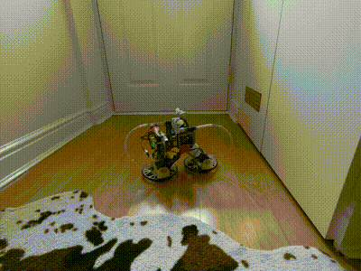
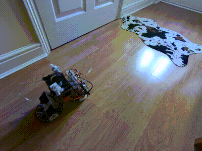
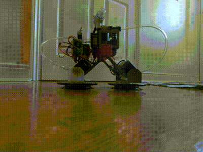
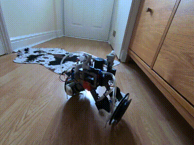
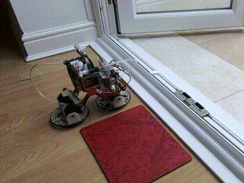
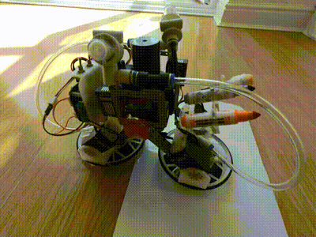

About
Naminukas1 is an ultimate indoor robot which can explore almost any part of the house including climbing on walls, ceiling and furniture. Robot is able to transform to either a bipedal walking robot which can hold on any hard flat surface with vacuum suction cups or a two wheel balancing robot which can drive on soft and porous surfaces like a carpet. The robot can be also used as 4 degrees of freedom pick & place arm. It caries detachable tools which can be picked and used by feet. In addition robot caries UVA+UVC LED which can be used to disinfect path traversed by the robot.
Climbing on the wall

Walking

Transforming to drive mode & back

Driving as 2 wheel balancing robot

As mobile 4DOF pick & place arm

Writing with its feet
